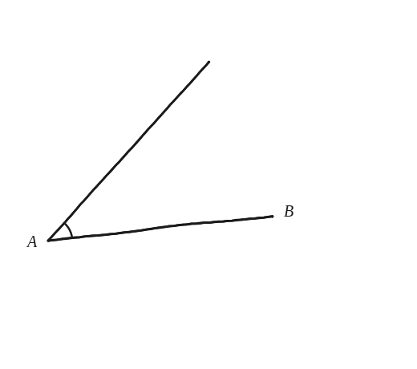
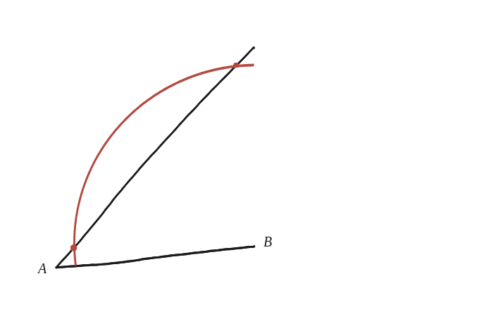
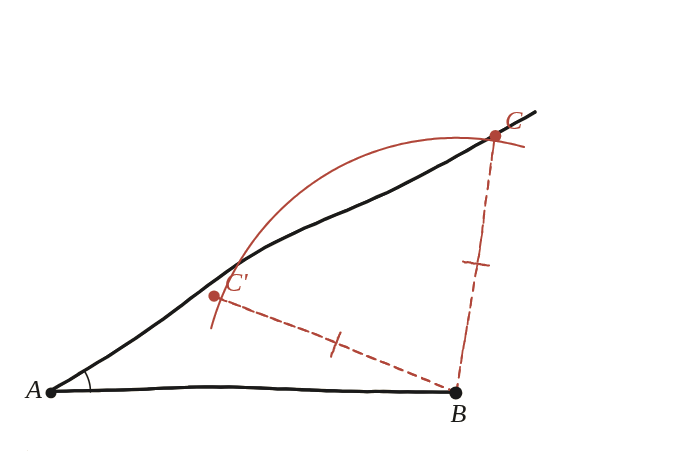

Per què dos costats i un angle no basten, en general, per determinar un triangle?

Quin angle exactament
Aquí "un angle" vol dir un angle que no és l'angle entre els dos costats donats. Si ho fos, seria el cas costat-angle-costat (SAS), i aquell sí que determina el triangle de manera única —tota la dificultat de la pregunta és aquesta distinció.
Fixar el que es pot fixar
Un angle a un vèrtex A i un dels costats donats sortint d'A cap a un punt B ja fixen A i B del tot. L'altre costat donat té una longitud fixa, però només se sap que el seu altre extrem C és en algun lloc del segon costat de l'angle —no es coneix encara on.

Quantes vegades talla l'arc
Clavant un compàs a B amb aquella longitud fixa i traçant l'arc, aquest pot tallar el segon costat de l'angle en dos punts diferents (o en un de sol, en un cas límit, o en cap si la longitud és massa curta) —no en un de sol en general.

Dos triangles, mateixes dades de partida
Els dos triangles ABC i ABC' comparteixen l'angle a A, el costat AB, i el costat BC (=BC'). Però són triangles diferents —els angles a C i a C' no coincideixen, ni tampoc el costat AC. Amb angle A=30°, AB=8, BC=5, el teorema del cosinus dona una equació de segon grau per a AC amb dues solucions positives diferents: AC≈9,93 i AC≈3,93.
No, dos costats i un angle no comprès (SSA) no basten: en general hi ha dos triangles diferents, no congruents entre si, que comparteixen exactament aquestes dades. És l'únic dels criteris clàssics de congruència que falla —per això es coneix com "el cas ambigu" en trigonometria, i reapareix sempre que es resol un triangle amb el teorema del sinus.
Comprovació
Angle A=30°, AB=8, BC=5: el teorema del cosinus dona AC≈9,93 i AC≈3,93, dues solucions vàlides. Si en canvi es donés l'angle comprès entre els dos costats (SAS), la mateixa equació només tindria una solució positiva possible.